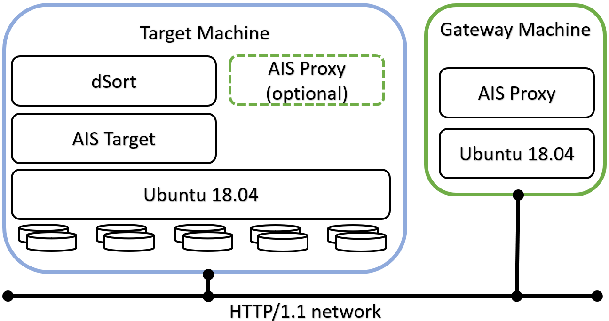
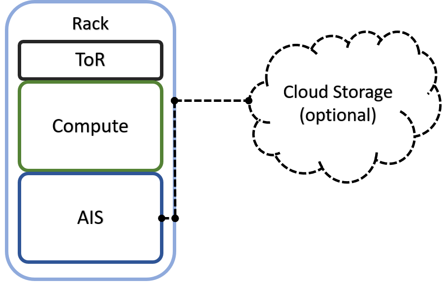
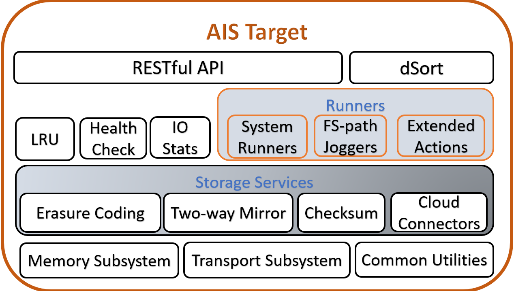
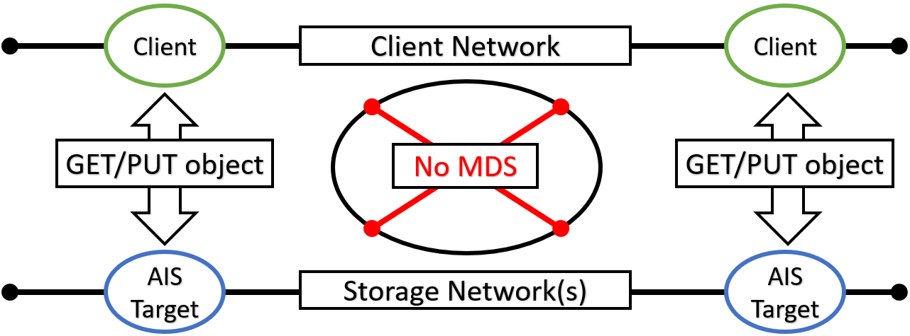

OVERVIEW
Introduction
Training deep learning (DL) models on petascale datasets is essential for achieving competitive and state-of-the-art performance in applications such as speech, video analytics, and object recognition. However, existing distributed filesystems were not developed for the access patterns and usability requirements of DL jobs.
In this white paper we describe AIStore and components, and then compare system performance experimentally using image classification workloads and storing training data on a variety of backends. For details, please see:
- AIStore white paper.
- IEEE BigData 2019 poster
The rest of this document is structured as follows:
- Design Philosophy
- Key Concepts and Diagrams
- Datapath
- Open Format
- Existing Datasets
- Data Protection
- Scale-Out
- HA
- Other Services
- dSort
- CLI
- Python Client
- AIS Limitations
Design Philosophy
It is often more optimal to let applications control how and whether the stored content is stored in chunks. That’s the simple truth that holds, in particular, for AI datasets that are often pre-sharded with content and boundaries of those shards based on application-specific optimization criteria. More exactly, the datasets could be pre-sharded, post-sharded, and otherwise transformed to facilitate training, inference, and simulation by the AI apps.
The corollary of this statement is two-fold:
- Breaking objects into pieces (often called chunks but also slices, segments, fragments, and blocks) and the related functionality does not necessarily belong to an AI-optimized storage system per se;
- Instead of breaking the objects in pieces (and then reassembling them with the help of a carefully maintained metadata), the storage system must better focus on providing assistance to simplify and accelerate dataset transformations.
Key Concepts and Diagrams
In this section: high-level diagrams that introduce key concepts and architecture, as well as possible deployment options.
AIS cluster comprises arbitrary (and not necessarily equal) numbers of gateways and storage targets. Targets utilize local disks while gateways are HTTP proxies that provide most of the control plane and never touch the data.
The terms gateway and proxy are used interchangeably throughout this README and other sources in the repository.
Both gateways and targets are userspace daemons that join (and, by joining, form) a storage cluster at their respective startup times, or upon user request. AIStore can be deployed on any commodity hardware with pretty much any Linux distribution (although we do recommend 4.x kernel). There are no designed-in size/scale type limitations. There are no dependencies on special hardware capabilities. The code itself is free, open, and MIT-licensed.
The diagram depicting AIS clustered node follows below, and makes the point that gateways and storage targets can be colocated in a single machine (or a VM) but not necessarily:

AIS can be deployed as a self-contained standalone persistent storage cluster and as a fast tier in front of existing Amazon S3 and Google Cloud (GCP) storage. The built-in caching mechanism provides LRU replacement policy on a per-bucket basis while taking into account configurable high and low capacity watermarks (see LRU for details). AWS/GCP integration is turnkey and boils down to provisioning AIS targets with credentials to access Cloud-based buckets.
If (compute + storage) rack is a unit of deployment, it may as well look as follows:

Finally, AIS target provides a number of storage services with S3-like RESTful API on top and a MapReduce layer that we call dSort.

Terminology
-
Cloud Provider - an abstraction, and simultaneously an API-supported option, that allows to delineate between “remote” and “local” buckets with respect to a given AIS cluster.
-
Mountpath - a single disk or a volume (a RAID) formatted with a local filesystem of choice, and a local directory that AIS utilizes to store user data and AIS metadata. A mountpath can be disabled and (re)enabled, automatically or administratively, at any point during runtime. In a given cluster, a total number of mountpaths would normally compute as a direct product of (number of storage targets) x (number of disks in each target).
Datapath
In AIS, all inter- and intra-cluster networking is based on HTTP/1.1 (with HTTP/2 option currently under development). HTTP(S) clients execute RESTful operations vis-à-vis AIS gateways and data then moves directly between the clients and storage targets with no metadata servers and no extra processing in-between:

MDS in the diagram above stands for the metadata server(s) or service(s).
In the picture, a client on the left side makes an I/O request which is then fully serviced by the left target - one of the nodes in the AIS cluster (not shown). Symmetrically, the right client engages with the right AIS target for its own GET or PUT object transaction. In each case, the entire transaction is executed via a single TCP session that connects the requesting client directly to one of the clustered nodes. As far as the datapath is concerned, there are no extra hops in the line of communications.
For detailed read and write sequence diagrams, please refer to this readme.
Distribution of objects across AIS cluster is done via (lightning fast) two-dimensional consistent-hash whereby objects get distributed across all storage targets and, within each target, all local disks.
Open Format
AIS targets utilize local Linux filesystems including (but not limited to) xfs, ext4, and openzfs. User data is checksummed and stored as is without any alteration (that also allows us to support direct client <=> disk datapath). AIS on-disk format is, therefore, largely defined by local filesystem(s) chosen at deployment time.
Notwithstanding, AIS stores and then maintains object replicas, erasure-coded slices, bucket metadata - in short, a variety of local and global-scope (persistent) structures - for details, please refer to:
You can access your data with and without AIS, and without any need to convert or export/import, etc. - at any time! Your data is stored in its original native format using user-given object names. Your data can be migrated out of AIS at any time as well, and, again, without any dependency whatsoever on the AIS itself.
Your own data is unlocked and immediately available at all times.
Existing Datasets
One common way to use AIStore includes the most basic step: populating it with an existing dataset, or datasets. To this end, AIS provides 5 (five) easy ways ranging from the (conventional) on-demand caching to (advanced) promoting of colocated files and directories:
In particular:
Existing Datasets: Cold GET
If the dataset in question is accessible via S3-like object API, start working with it via GET primitive of the AIS API. Just make sure to provision AIS with the corresponding credentials to access the dataset’s bucket in the Cloud.
As far as supported S3-like backends, AIS currently supports Amazon S3 and Google Cloud.
AIS executes cold GET from the Cloud if and only if the object is not stored (by AIS), or the object has a bad checksum, or the object’s version is outdated.
In all other cases, AIS will service the GET request without going to Cloud.
Existing Datasets: Batch Prefetch
Alternatively or in parallel, you can also prefetch a flexibly-defined list or range of objects from any given Cloud bucket, as described in this readme.
Existing Datasets: integrated Downloader
But what if the dataset in question exists in the form of (vanilla) HTTP/HTTPS URL(s)? What if there’s a popular bucket in, say, Google Cloud that contains images that you’d like to bring over into your Data Center and make available locally for AI researchers?
For these and similar use cases we have AIS Downloader - an integrated tool that can execute massive download requests, track their progress, and populate AIStore directly from the Internet.
Existing Datasets: Reverse Proxy
AIS can also be designated as HTTP proxy vis-à-vis 3rd party object storages. This mode of operation is limited to Google Cloud Storage (GCS) and requires:
- HTTP(s) client side: set the
http_proxy(https_proxy- for HTTPS) environment - AIS configuration: set
rproxy=cloudin the configuration
Note that http_proxy is supported by most UNIX systems and is recognized by most (but not all) HTTP clients:
$ export http_proxy=<AIS proxy IPv4 or hostname>
In combination, these two settings have an effect of redirecting all unmodified client-issued HTTP(S) requests to the AIS proxy/gateway with subsequent execution transparently from the client perspective.
Further details and examples are available in this readme.
Existing Datasets: Promote (API and CLI)
Finally, AIS can promote files and directories to objects. The only requirement is that the files and directories in question are colocated within AIS storage target machines.
Let’s consider a quick example. Say, some (or all) of the deployed storage nodes contain a directory called /tmp/mydata. By running the following CLI, we could make AIS objects (one file = one object) out of all files scattered across all nodes:
$ ais promote /tmp/mydata mybucket/ -r
In this example, mybucket would be the designated (destination) bucket.
Data Protection
AIS supports end-to-end checksum protection, 2-way local mirroring, and Reed-Solomon erasure coding - thus providing for arbitrary user-defined levels of cluster-wide data redundancy and space efficiency.
Scale-Out
The scale-out category includes balanced and fair distribution of objects where each storage target will store (via a variant of the consistent hashing) 1/Nth of the entire namespace where (the number of objects) N is unlimited by design.
AIS cluster capability to scale-out is truly unlimited. The real-life limitations can only be imposed by the environment - capacity of a given Data Center, for instance.
Similar to the AIS gateways, AIS storage targets can join and leave at any moment causing the cluster to rebalance itself in the background and without downtime.
HA
AIS features a highly-available control plane where all gateways are absolutely identical in terms of their (client-accessible) data and control plane APIs. Gateways can be ad hoc added and removed, deployed remotely and/or locally to the compute clients (the latter option will eliminate one network roundtrip to resolve object locations).
Fast Tier
AIS can be deployed as a fast tier in front of existing Amazon S3 and Google Cloud (GCP) storage.
As a fast tier, AIS populates itself on demand (via cold GETs) and/or via its own prefetch API (see List/Range Operations) that runs in the background to download batches of objects.
Other Services
The (quickly growing) list of services includes (but is not limited to):
- health monitoring and recovery
- range read
- dry-run (to measure raw network and disk performance)
- performance and capacity monitoring with full observability via StatsD/Grafana
- load balancing
Load balancing consists in optimal selection of a local object replica and, therefore, requires buckets configured for local mirroring.
Most notably, AIStore provides dSort - a MapReduce layer that performs a wide variety of user-defined merge/sort transformations on large datasets used for/by deep learning applications.
dSort
DSort “views” AIS objects as named shards that comprise archived key/value data. In its 1.0 realization, dSort supports tar, zip, and tar-gzip formats and a variety of built-in sorting algorithms; it is designed, though, to incorporate other popular archival formats including tf.Record and tf.Example (TensorFlow) and MessagePack. The user runs dSort by specifying an input dataset, by-key or by-value (i.e., by content) sorting algorithm, and a desired size of the resulting shards. The rest is done automatically and in parallel by the AIS storage targets, with no part of the processing that’d involve a single-host centralization and with dSort stage and progress-within-stage that can be monitored via user-friendly statistics.
By design, dSort tightly integrates with the AIS-object to take full advantage of the combined clustered CPU and IOPS. Each dSort job (note that multiple jobs can execute in parallel) generates a massively-parallel intra-cluster workload where each AIS target communicates with all other targets and executes a proportional “piece” of a job. This ultimately results in a transformed dataset optimized for subsequent training and inference by deep learning apps.
CLI
AIStore includes an easy-to-use management-and-monitoring facility called AIS CLI. Once installed, to start using it, simply execute:
$ export AIS_URL=http://G
$ ais --help
where G (above) denotes a hostname:port address of any AIS gateway (for developers it’ll often be localhost:8080). Needless to say, the “exporting” must be done only once.
One salient feature of AIS CLI is its Bash style auto-completions that allow users to easily navigate supported operations and options by simply pressing the TAB key. For instance, when you type:
$ ais s[TAB-TAB]
the tool will suggest the following “expansion” from which you can further choose by typing one or more letters and pressing the TAB key, etc.
$ ais s
set set-copies show start status stop
AIS CLI is still at its early stage and will keep quickly developing. For more information, please see the project’s own README.
Python Client
AIStore provides an easy way to generate a python client package for simplified integration. The user can, after following a few simple steps, import the generated package and start communicating with AIS via its RESTful API. The generated package will cover the entire functionality of the API.
Background: OpenAPI Generator is a tool that generates python client packages for simplified integration with RESTful APIs. We use OpenAPI Generator to generate the python client package using the OpenAPI Specification file located here.
To get started with the python client package, you need to first generate the client package. These instuctions can also be found here.
-
Obtain the latest openapi-generator jar by running the following command:
wget http://central.maven.org/maven2/org/openapitools/openapi-generator-cli/3.3.4/openapi-generator-cli-3.3.4.jar -O openapi-generator-cli.jar -
Run the following commands:
cd <path_to_repo> java -jar </path/to/openapi-generator-cli.jar> generate -i openapi/openapi.yaml -c openapi/config.json -g python -o ./python-client/ -
Install
pip- a package management system used to install and manage software packages written in Python. Visit the installation page for instructions on how to installpip. -
Install required Python packages using
pipand requirement files located inpython-clientdirectory:pip install -r python-client/requirements.txt pip install -r python-client/test-requirements.txt
These steps should produce the python client package, which will be located here.
Should you have any difficulty generating the python client package with these instructions, please open a ticket, and we will provide further assistance.
Once the package is generated, it can be installed as follows, these commands can also be found here.
cd <path_to_repo>/python-client
pip uninstall ais_client #uninstalls any previous versions
pip install .
Now you’re ready to import the package in python and use it to communicate with AIS.
For example, this script will display a map of your AIS cluster.
import ais_client
# Some aliases for functions in the package
openapi_models = ais_client.models
openapi_params = openapi_models.InputParameters
openapi_actions = openapi_models.Actions
configuration = ais_client.Configuration()
configuration.debug = False
proxy_url = 'localhost:8080' #Change this to the ip of any proxy in your AIS cluster, ex: 172.50.0.2:8080
configuration.host = 'http://%s/v1/' % proxy_url
proxyClient = ais_client.ApiClient(configuration)
daemon_api = ais_client.api.daemon_api.DaemonApi(proxyClient)
print(daemon_api.get(openapi_models.GetWhat.SMAP))
There’s a lot more that the python client package can do. Be sure to read the complete guide on using the package.
AIS Limitations
There are no designed-in limitations on the:
- object sizes
- total number of objects and buckets in AIS cluster
- the number of objects in a single AIS bucket
- numbers of gateways and storage targets in AIS cluster
Ultimately, the limit on object size may be imposed by a local filesystem of choice and a physical disk capacity. While limit on the cluster size - by the capacity of the hosting AIStore Data Center. But as far as AIS itself, it does not impose any limitations whatsoever.